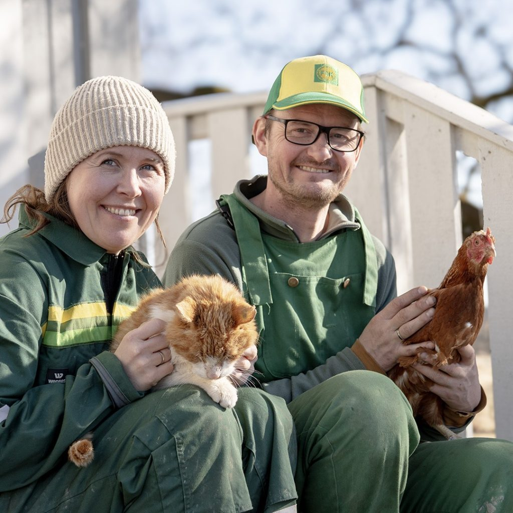

En gård ved Glomma i over 400 år.
Vi liker å drive med mye forskjellig, og det gjør vi her på gården. Vi er begge opprinnelig fra Askim, og flyttet tilbake da vi tok over gården etter Cathrines bestemor i 2019.
Fladmark gård er en idyllisk gård ved bredden av Glomma i Askim, Indre Østfold. Her ønsker vi velkommen til en genuin gårdsopplevelse for alle. Hos oss kan du delta i diverse aktiviteter, fra dyrestell til rolige naturopplevelser. For barna er det alltid spennende å hilse på hønsene og kaninene, mens de voksne ofte lar seg fascinere av våre sjarmerende alpakkaer Kjell-Bjarne & Elling og ikke minst Willy Lama.
Fladmark gård er en sertifisert Inn på tunet-gård med tilrettelagte velferdstjenester. Les mer om dette her: gårdsgledeforalle.no

De eldste sporene etter mennesker i Askim ligger nettopp her: langs Glomma mellom Kjellås og Vamma er det gjort funn fra Nøstvetkulturen i steinalderen (ca. 5400–4000 fvt). Gjenstander fra strekningen ble samlet inn av fløterne Johan og Hans Sand og Jens Skjolden (1916–1943), og finnes i dag hos Kulturhistorisk museum. Folk har altså bodd og ferdes langs denne delen av Glomma i minst 6000 år.
Gården dukker opp i historien i 1584, da den ble utskilt som ødegård og ene-eie, altså en selvstendig gård. I 1806 (antatt år) kjøpte Peder og Dorthe gården, og den har etter det vært i samme familie. Cathrine og familien er 6. generasjon på gården. Gjennom generasjoner har dette vært en klassisk gård på Østlandet med hest, gris, høner og kyr, skog. I 1961 kom den første traktoren til gården, etter Cathrines bestefar initiativ og store glede.
Glomma har alltid grenset til gården: eng og beite, og vannveien som bandt bygda sammen. Men elvelandskapet her er ikke det samme som for hundre år siden. For Fladmark gård betød det mindre eng og beite.
Så tidlig som på 1700-tallet lå gården på en direkte gjennomfartsåre: Gurud, Skjolden, Fladmark, Vammeli, og videre med flåte eller vading over Glomma til Svae i Skiptvet. Da Vammasjøen ble demt opp i 1915, forsvant det gamle overfartsstedet under vann.
I århundrene før kraftutbygginga lå gården med strandlinje ned mot Glomma, og her gikk det sannsynligvis beitedyr. På den tiden var det en hel rekke naturlige fossefall: Fossumfoss, Kykkelsrudfoss, Vrangefossen med flere. I dag finnes bare Vrangefossen igjen, som en mindre foss der den en gang var et enormt fossefall. Fossen er likevel fortsatt vill, og absolutt ikke ufarlig.
Hvorfor heter gården Fladmark, når terrenget her er alt annet enn flatt? Vi vet ikke, men vi kan gjøre noen antagelser.
Navnet har vært skrevet på mange måter gjennom hundreårene: i folketellinga i 1801 sto bostedet skrevet «Flademarch», i matrikkelen og bygdebøkene for Askim finner vi både Flatmark, Flademark og Fladmark. Gården ble en selvstendig enhet i middelalderen. Og her blir navnet interessant, for «mark» kan i gammel tid romme en dobbeltbetydning:
Skog – gammelnorsk mǫrk betydde opprinnelig skog, ofte nettopp skogsbeltet langs ei grense: utmarka som skilte gården mot naboen eller mot elva. I middelalderen kan navnet altså ha betydd «den flate skogen» med grense mot Glomma.
Eng og åker – seinere, i danskpåvirket skrift og tale fra 1600-tallet, betydde «mark» åpent, dyrket land. For dem som skrev «Flademark» i matrikkelen, var det naturlig å lese navnet som de flate engene langs Glomma.
Det fine er at begge betydningene peker samme vei: mot grenselandet mot elva. Et flatt belte i overgangen mellom gård og Glomma, med skog på den ene sida og enger og beiter på den andre.
For eng-tolkningen taler et stedsnavn vi fortsatt bruker: bukta nedenfor gården heter Engerbukta. Sannsynligvis oppkalt etter engene og beitene som fantes her før Vamma kraftverk sto ferdig i 1915, og vannstanden i Glomma ble endret for godt. Der engene var, er det i dag en stille bukt i Vammasjøen.
Kanskje betyr Fladmark altså: det flate grenselandet mot elva, skogen som sto der, engene som lå der, og navnet som husker begge deler.
Alpakkaer, lama og kasjmirgeiter er fremdeles nytt i norsk dyrehold. Her har de funnet sin plass. Alpakkaene og lamaen kan gå ute i norsk vær hele året, og kasjmirgeitene gjør det samme. Kasjmirgeiter er usedvanlig robuste, og stammer fra fjellstrøkene i Sentralasia. Som alpakka og lama, er geitene bygd for å klare både kulde og tøft vær. Under den fine, dunaktige underullen har geitene et grovt ytre lag som holder regn og snø ute. På Fladmark beiter de i de bratte ravinedalene, og koser seg særlig med hassel og osp. Bikubene står nede mot Glomma, slik elva har gitt gården grunnlag i over 400 år.
Telefon: 988 16 111
E-post: espen@fladmarkgard.no